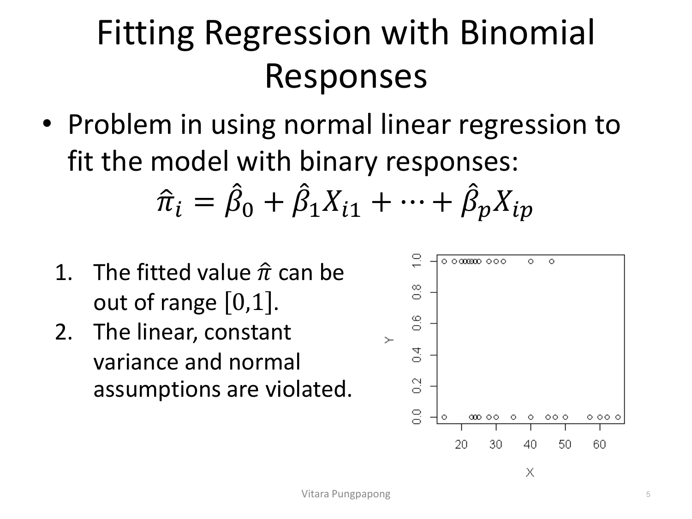
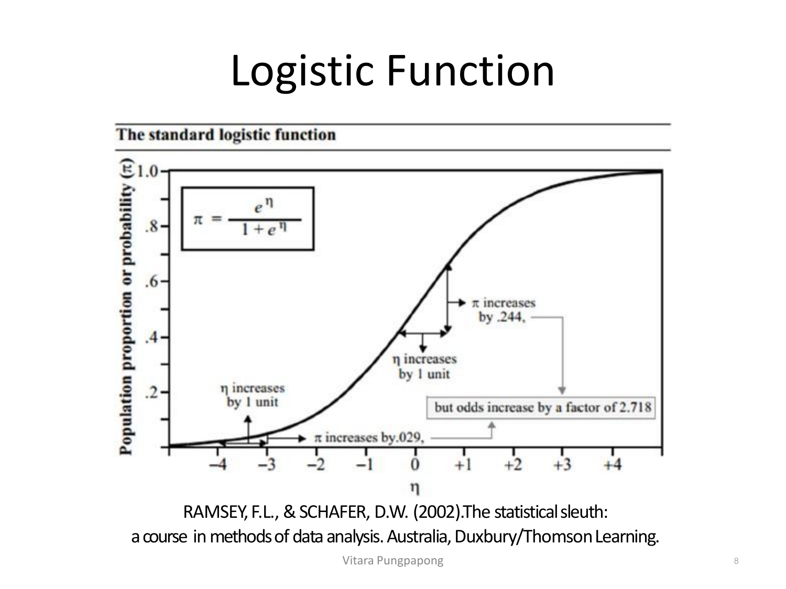
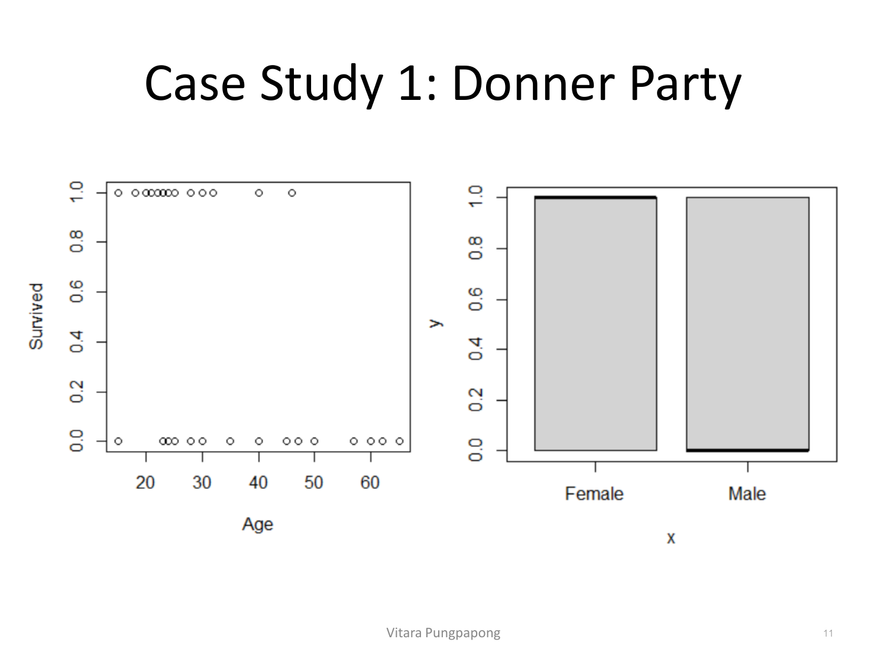
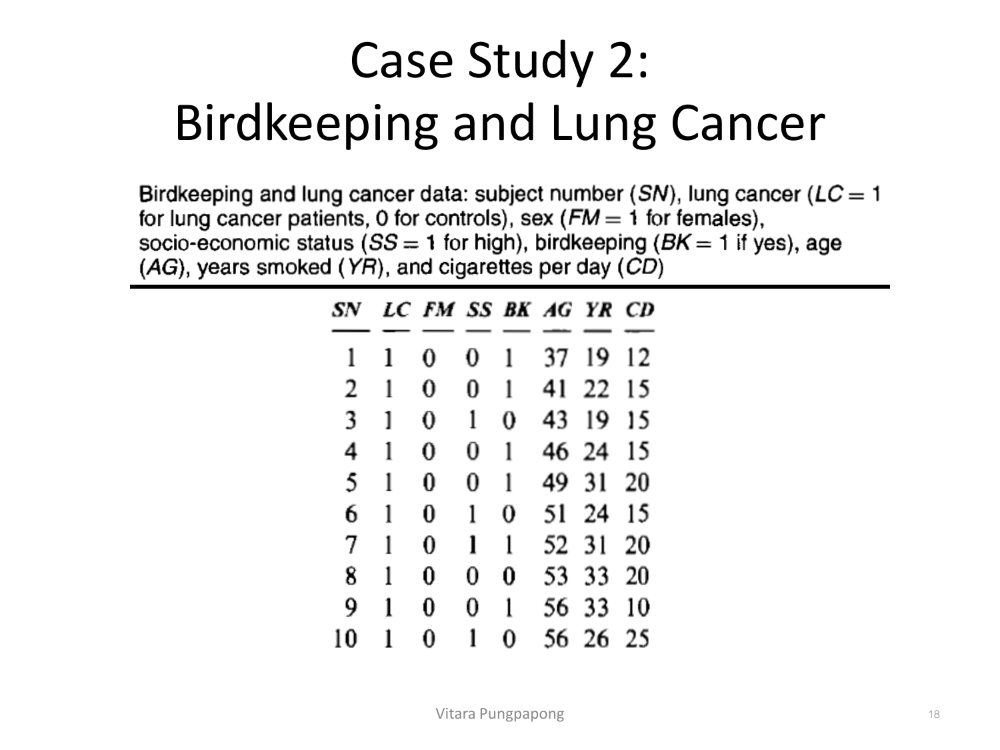
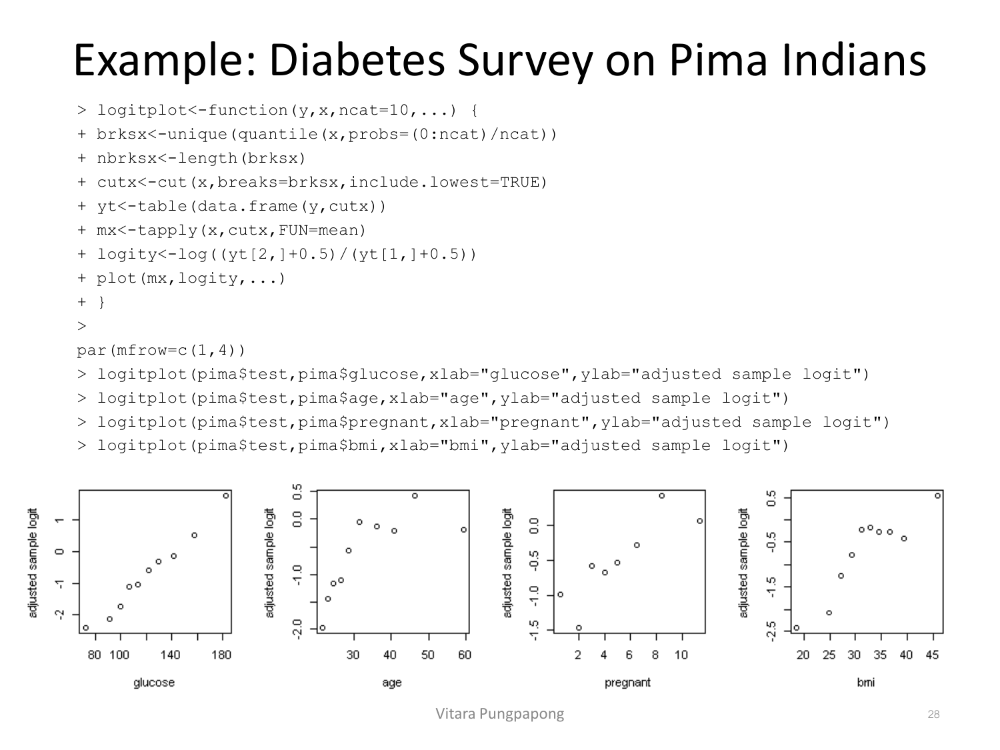
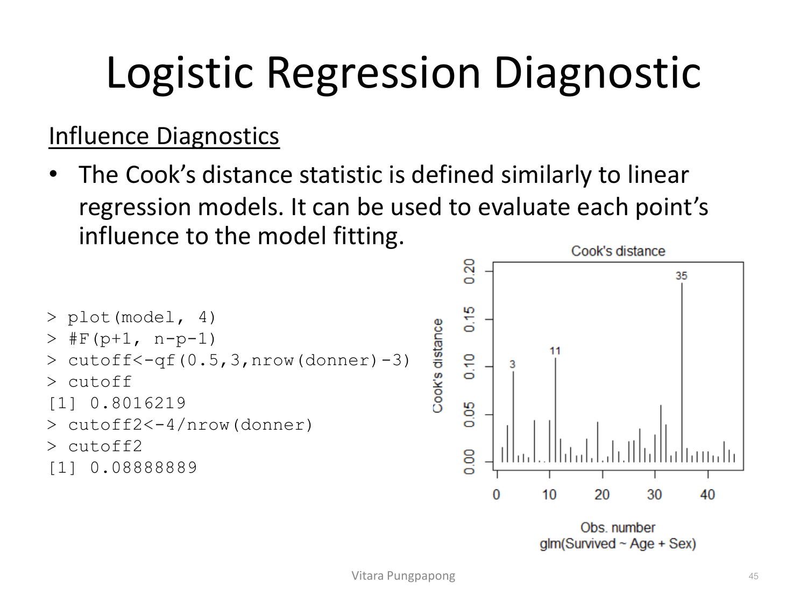
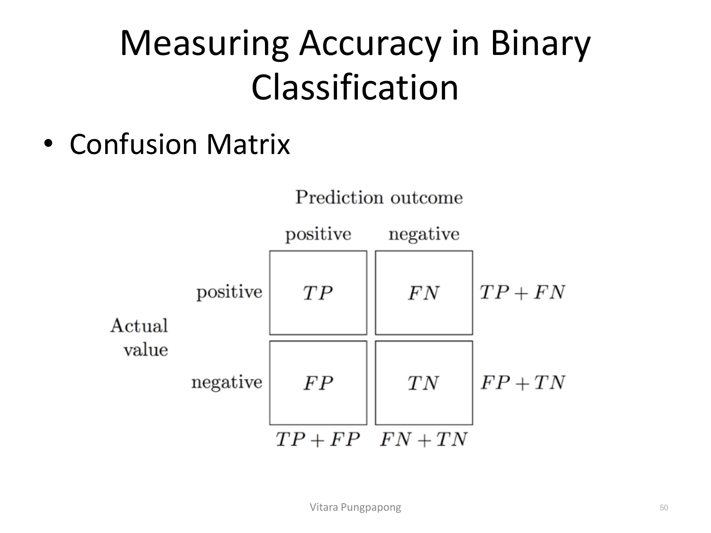
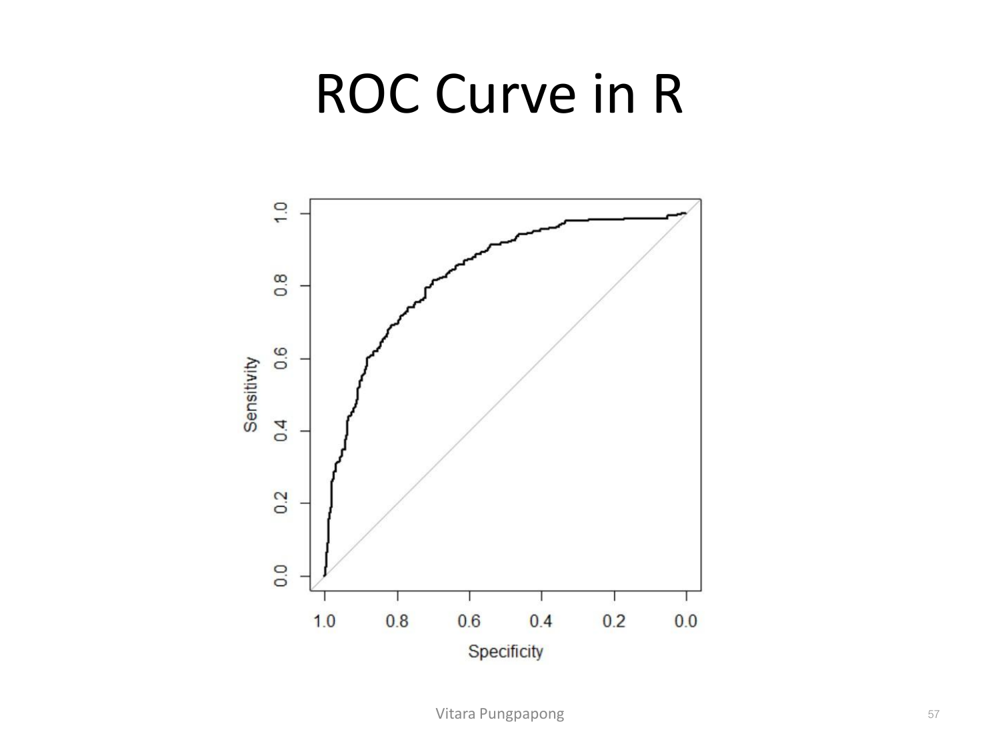
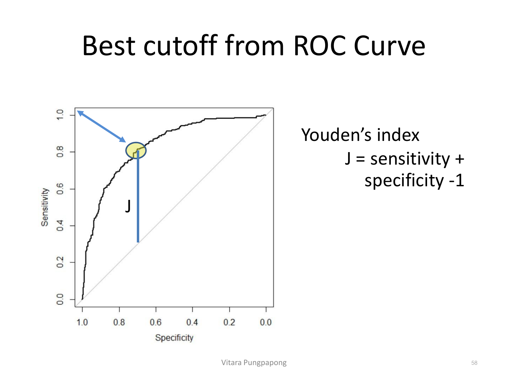

→ ฝึกกับโจทย์จริง: Breast Cancer Diagnosis (Assignment 7#1)
Lecture 9 — Binary Data
บทเรียนนี้ต่อยอดจาก GLM framework ใน Lecture 8 (exponential family, link function, linear predictor) มาใช้กับ response ที่เป็น binary (0/1) โดยตรง เนื้อหาที่ต้องทำได้ก่อนสอบ: เขียนสมการ logistic regression ถูก พร้อมเชื่อมกับ GLM framework, อ่าน summary(glm(family=binomial)) ได้ทุกบรรทัด (รู้ว่าต่างจาก lm() อย่างไร), เช็ค goodness-of-fit (Hosmer-Lemeshow, deviance, AIC), และที่สำคัญที่สุด — แปลผลสัมประสิทธิ์เป็น log-odds / odds ratio / probability ได้ถูกต้องแม่นยำ ซึ่งตามที่ระบุไว้ใน mission เป็นทักษะที่ออกสอบหนักที่สุดในวิชานี้ทั้งเทอม.
Binary response คือตัวแปรตามที่มีแค่ 2 ค่า เข้ารหัสมาตรฐานเป็น Y_i = 0 (no) และ Y_i = 1 (yes) สไลด์กำหนดการแจกแจงของ Y_i ไว้ดังนี้:
นี่คือจุดที่ผิดกับ assumption ของ linear regression ตั้งแต่ต้น (Lecture 1 หัวข้อ 4: constant variance).
ถ้าลองฟิต normal linear regression ตรง ๆ กับข้อมูล binary (\(\hat{\pi}_i = \hat{\beta}_0+\hat{\beta}_1 X_{i1}+\cdots+\hat{\beta}_p X_{ip}\)) จะเจอปัญหา 2 ข้อ:
ภาพต่อไปนี้ใช้ข้อมูล Donner Party จริง (อายุ กับ รอดชีวิตหรือไม่) แสดงปัญหานี้ให้เห็นชัด:

อ่านภาพ: จุดข้อมูลทั้งหมดเกาะอยู่แค่สองแถวคือ Y=0 กับ Y=1 เท่านั้น ไม่มีจุดไหนอยู่ระหว่างกลางเลย
ทางแก้คือใช้กรอบ GLM ที่วางไว้ใน Lecture 8 ซึ่งประกอบด้วย 2 ส่วนหลัก:
ในตาราง "GLMs with Canonical Links" ของ Lecture 8 canonical link ของ Binomial คือ logit พอดี ดังนั้น logistic regression จึงเป็นแค่กรณีพิเศษของ GLM ที่ random component = Bernoulli/Binomial และ link function = logit ไม่ใช่โมเดลใหม่แยกต่างหาก.
ข้อมูลของโมเดลนี้คือ \((Y_i, n_i, X_i), i=1,\ldots,n\) โดย \(Y_i\) = จำนวนครั้งที่สำเร็จในการสังเกตที่ i, \(n_i\) = จำนวนครั้งทั้งหมด (สำหรับ binary data \(n_i=1\) ทุกตัว), \(X_i\) = row vector ของตัวแปรอิสระ p ตัว. จาก log-likelihood ของ Binomial ที่จัดรูปแล้ว สไลด์ชี้ว่าพจน์ \(\log(\pi_i/(1-\pi_i))\) ปรากฏขึ้นเองตามธรรมชาติ — นี่คือที่มาของ "logit link":
ดังนั้น logistic regression เขียนเป็น:
ฝั่งซ้ายของสมการเรียกว่า log-odds หรือ logit ของ π_i — นี่คือพจน์ที่ coefficient β ทุกตัวใน logistic regression อธิบายโดยตรง (จะกลับมาขยายผลในหัวข้อ 4). ฟังก์ชันผกผันของ logit เรียกว่า logistic function: ถ้า \(\text{logit}(\pi_i)=\eta_i\) แล้ว
ภาพนี้คือ logistic function มาตรฐาน แกน X คือ η (linear predictor) แกน Y คือ π (ความน่าจะเป็น) — สังเกตตัวเลขที่กำกับไว้ในภาพต้นฉบับ (Ramsey & Schafer):

อ่านตัวเลขในภาพ: ที่ \(\eta \approx 0\) (ตรงกลางเส้นโค้ง ความชันสูงสุด) การเพิ่ม η ขึ้น 1 หน่วย ทำให้ \(\pi\) เพิ่มขึ้นถึง 0.244 — แต่ที่ \(\eta \approx -3\) (ปลายเส้นโค้งด้านซ้าย ใกล้ 0) การเพิ่ม η ขึ้น 1 หน่วยเท่ากัน ทำให้ π เพิ่มขึ้นแค่ 0.029 เท่านั้น. นี่คือหัวใจสำคัญที่ทำให้การแปลผล logistic regression ต่างจาก linear regression โดยพื้นฐาน: ผลของ X ต่อ π ไม่คงที่ตลอดช่วง (non-linear ใน scale ของ π) แต่ผลของ X ต่อ log-odds คงที่เสมอ (linear ใน scale ของ η) — และกล่องข้อความในภาพยืนยันสิ่งที่คงที่จริง ๆ : "but odds increase by a factor of 2.718" (= e¹) ทุกครั้งที่ η เพิ่มขึ้น 1 หน่วย ไม่ว่าจะอยู่ตรงไหนของเส้นโค้ง — นี่คือเหตุผลที่การแปลผลสัมประสิทธิ์ β ในหัวข้อ 4 ต้องพูดเป็น "odds คูณด้วย e^β" ไม่ใช่ "π บวกด้วย β" แบบ linear regression.
glm(): Case Study 1 — Donner Partyปี 1846 ครอบครัว Donner และ Reed ออกเดินทางจาก Springfield รัฐ Illinois ไปแคลิฟอร์เนียด้วยเกวียน (87 คน 20 คัน) แต่ติดหิมะหนักที่เทือกเขา Sierra Nevada ช่วงปลายเดือนตุลาคม — 40 จาก 87 คนเสียชีวิตจากความอดอยากและความหนาวจัด สไลด์ใช้ข้อมูลนี้ (Sleuth3::case2001, n=45 คนที่มีข้อมูลอายุครบ) ถามว่า อายุ กับ เพศ สัมพันธ์กับการรอดชีวิตอย่างไร:

อ่านภาพ: กราฟซ้าย จุดที่ Survived=1 (แถวบน) กระจุกตัวที่อายุน้อยกว่ากราฟที่ Survived=0 (แถวล่าง) ที่มีจุดกระจายไปถึงอายุ 60+ ปีมากกว่า — สื่อว่าอายุน้อยมีแนวโน้มรอดชีวิตมากกว่า (ทิศทางลบระหว่าง age กับ survival). กราฟขวา แท่ง "Female" มีสัดส่วนสีเทา (y=1, รอดชีวิต) เต็มเกือบทั้งแท่ง ในขณะที่แท่ง "Male" มีส่วนสีเทาน้อยกว่าชัดเจน (เห็นเส้นขอบดำที่ฐานสูงขึ้นมา) — ผู้หญิงรอดชีวิตในสัดส่วนที่สูงกว่าผู้ชายอย่างเห็นได้ชัด ทั้งสองภาพนี้คือเหตุผลที่โมเดลต่อไปนี้ใส่ทั้ง Age และ Sex เป็นตัวแปรอิสระ.
ใน R ฟิต logistic regression ด้วย glm(formula, data, family=binomial, subset, weights, …) — แตกต่างจาก lm() ตรงที่ต้องระบุ family=binomial (ค่า default ของ link คือ logit) เท่านั้น argument อื่นเหมือนเดิม:
> donner<-as.data.frame(Sleuth3::case2001)
> n<-nrow(donner)
> Survived<-rep(0,n)
> Survived[donner$Status=="Survived"]<-1
> donner<-cbind(donner,Survived)
> model<-glm(Survived~Age+Sex, data=donner, family=binomial)
> summary(model)ผลลัพธ์เต็มจาก summary(model):
Call:
glm(formula = Survived ~ Age + Sex, family = binomial, data = donner)
Coefficients:
Estimate Std. Error z value Pr(>|z|)
(Intercept) 3.23041 1.38686 2.329 0.0198 *
Age -0.07820 0.03728 -2.097 0.0359 *
SexMale -1.59729 0.75547 -2.114 0.0345 *
---
Signif. codes: 0 '***' 0.001 '**' 0.01 '*' 0.05 '.' 0.1 ' ' 1
(Dispersion parameter for binomial family taken to be 1)
Null deviance: 61.827 on 44 degrees of freedom
Residual deviance: 51.256 on 42 degrees of freedom
AIC: 57.256
Number of Fisher Scoring iterations: 4summary(glm(...)) — ต่างจาก summary(lm(...)) ตรงไหนบ้างz value (Wald statistic, ~N(0,1)) แทน t value เพราะ MLE ของ β มีการแจกแจงแบบ normal โดยประมาณ (asymptotic) ไม่ใช่ t-distribution แบบ exact เหมือน OLS — z = Estimate/Std.Error สูตรหน้าตาเหมือนเดิม แต่ referenced distribution เปลี่ยนlm() — สำหรับ binomial family ค่านี้ถูกกำหนดตายตัวเป็น 1 เสมอ (variance ของ Bernoulli ผูกกับ mean อยู่แล้ว ไม่มีพารามิเตอร์ scale แยก)lm() เลย (ดูหัวข้อ 7 เรื่อง pseudo R² ที่ต้องคำนวณเอง)lm() เช่นกัน — ใช้เทียบโมเดลที่ไม่ nested กันได้ (ยิ่งน้อยยิ่งดี)ให้ \(\pi_i = P(Y_i=1) = P(\text{Survived})\) โมเดลที่ฟิตได้คือ:
ก่อนแปลผล β ต้องเข้าใจ odds ก่อน: \(\omega = \dfrac{\pi}{1-\pi}\) คืออัตราส่วนของ "ความน่าจะเป็นที่จะเกิด" ต่อ "ความน่าจะเป็นที่จะไม่เกิด" ตัวอย่างจากสไลด์: ถ้า \(\hat{\pi} = 0.742\) แล้ว \(\hat{\omega} = 0.742/(1-0.742) = 2.876\) — แปลว่า "มีการรอดชีวิตประมาณ 3 ครั้งต่อการเสียชีวิต 1 ครั้ง" (ปัดจาก 2.876 เป็น "ประมาณ 3 ต่อ 1") สังเกตว่า odds กับ probability เป็นคนละสเกลกัน (π มีขอบเขต [0,1] แต่ ω มีขอบเขต [0,∞)) — logit ก็คือ \(\log(\omega)\) นั่นเอง.
เขียน logistic regression ใหม่ในเทอมของ odds:
จากรูปแบบ exponential ของ ω นี้ สไลด์สรุปกฎการแปลผล β ไว้ 2 ข้อตรง ๆ:
ประยุกต์กับ Donner Party (β_Age=−0.078, β_SexMale=−1.60): เทียบผู้หญิงอายุ 50 ปี กับผู้หญิงอายุ 20 ปี (age เปลี่ยน A−B=30, เพศคงที่) odds ratio = \(\exp\{-0.078\times(50-20)\} = \exp(-2.34) = 0.096 \approx 1/10\) — odds การรอดชีวิตของผู้หญิงอายุ 20 ปี สูงเป็นประมาณ 10 เท่าของผู้หญิงอายุ 50 ปี. เทียบผู้หญิงกับผู้ชายอายุเท่ากัน (Male เปลี่ยนจาก 0→1, A−B = 0−1 = −1) odds ratio = \(\exp\{-1.60\times(0-1)\} = \exp(1.60) = 4.95\) — odds การรอดชีวิตของผู้หญิง สูงเป็นประมาณ 5 เท่าของผู้ชายที่อายุเท่ากัน.
(1) Log-odds: "เมื่อ [X_k] เพิ่มขึ้น 1 [หน่วย] โดยตัวแปรอื่นคงที่ log-odds ของ [outcome=1] เปลี่ยนไป [β̂_k] หน่วย (บวก=เพิ่ม, ลบ=ลด)"
(2) Odds ratio (ใช้ตอบสอบบ่อยที่สุด): "odds ของ [outcome=1] เปลี่ยนเป็น \(\exp(\hat{\beta}_k)\) เท่า ทุก 1 [หน่วย] ที่ [X_k] เพิ่มขึ้น โดยตัวแปรอื่นคงที่" — ถ้า \(\exp(\hat{\beta}_k)>1\) ให้พูดว่า "odds เพิ่มขึ้น [\((\exp(\hat{\beta}_k)-1)\times 100\)]%"; ถ้า \(\exp(\hat{\beta}_k)<1\) ให้พูดว่า "odds ลดลงเหลือ [\(\exp(\hat{\beta}_k)\times 100\)]% ของเดิม" หรือกลับเศษส่วน \(1/\exp(\hat{\beta}_k)\) แล้วพูดว่า "odds ของกลุ่มอ้างอิงสูงกว่า [\(1/\exp(\hat{\beta}_k)\)] เท่า"
(3) Probability ที่จุด X เฉพาะเจาะจง: ใช้ predict(model, newdata, type="response") ได้ \(\hat{\pi}\) ตรง ๆ แล้วพูดว่า "ที่ [X_k]=[ค่า] และตัวแปรอื่น=[ค่า] ความน่าจะเป็นของ [outcome=1] ที่โมเดลทำนายคือ [\(\hat{\pi}\)]" — ข้อควรระวัง: ผลของ 1 หน่วยที่เพิ่มใน X_k ต่อ π ไม่คงที่ (ต่างจาก log-odds ที่คงที่เสมอ) จึงต้องระบุจุด X ที่สนใจเสมอ ห้ามพูดลอย ๆ ว่า "π เปลี่ยนไปเท่าไร" โดยไม่บอกจุดอ้างอิง
ห้ามใช้: "ทำให้" / "เป็นสาเหตุของ" กับข้อมูล observational (เหมือน Lecture 1) — ใช้ "สัมพันธ์กับ" แทนเสมอ เว้นแต่มาจาก randomized experiment
(1) Log-odds: "เมื่ออายุเพิ่มขึ้น 1 ปี โดยเพศคงที่ log-odds ของการรอดชีวิตลดลงโดยเฉลี่ย 0.0782 หน่วย (อย่างมีนัยสำคัญทางสถิติที่ p=0.0359)"
(2) Odds ratio: exp(−0.0782) = 0.9248 — "เมื่ออายุเพิ่มขึ้น 1 ปี โดยเพศคงที่ odds ของการรอดชีวิตเปลี่ยนเป็น 0.9248 เท่าของเดิม หรือลดลงประมาณ 7.5% ต่อการเพิ่มอายุ 1 ปี"
องค์ประกอบที่ขาดไม่ได้: อ้างหน่วยของ X_k (1 ปี), ระบุ "โดยตัวแปรอื่นคงที่", ใช้คำว่า exp(β) ไม่ใช่ β ตรง ๆ สำหรับ odds ratio
"เมื่อเปรียบเทียบผู้หญิงกับผู้ชายที่อายุเท่ากัน odds ของการรอดชีวิตของผู้หญิงสูงเป็นประมาณ 4.95 เท่าของผู้ชาย (อย่างมีนัยสำคัญทางสถิติที่ p=0.0345)"
เหตุผลที่ใช้ (0−1): สูตร odds ratio คือ \(\dfrac{\omega_A}{\omega_B} = \exp\{\beta(A-B)\}\) โดย A คือค่าตัวแปรของกลุ่มที่อยู่ "เศษ" (ผู้หญิง = Male 0) และ B คือกลุ่มที่อยู่ "ส่วน" (ผู้ชาย = Male 1) — เพราะโจทย์ต้องการ "odds ผู้หญิง เทียบกับ odds ผู้ชาย" (ω_female/ω_male) จึงต้องแทน A=0 (female) และ B=1 (male) ทำให้ A−B = 0−1 = −1 ถ้าสลับค่ากันจะได้ 1/4.95=0.202 ซึ่งแปลว่า "odds ผู้ชายเทียบผู้หญิง" แทน ไม่ใช่คำตอบที่โจทย์ต้องการ
นี่คือ retrospective observational study: การสำรวจสุขภาพปี 1972–1981 ที่กรุงเฮก เนเธอร์แลนด์ พบความสัมพันธ์ระหว่างการเลี้ยงนกกับความเสี่ยงมะเร็งปอดที่เพิ่มขึ้น เพื่อตรวจสอบว่าการเลี้ยงนกเป็น risk factor จริงหรือไม่ นักวิจัยทำ case-control study ปี 1985 ที่โรงพยาบาล 4 แห่งในเฮก — ระบุผู้ป่วยมะเร็งปอดอายุ ≤65 ปี 49 คน (cases) และเลือก control จากประชากรอายุใกล้เคียงกัน 98 คน (รวม n=147) ตัวแปรที่เก็บ ได้แก่ เพศ (FM), สถานะทางสังคมเศรษฐกิจ (SS), การเลี้ยงนก (BK), อายุ (AG), ปีที่สูบบุหรี่ (YR), จำนวนบุหรี่ต่อวัน (CD):

อ่านตัวเลขในตาราง: subject 1 คือผู้ป่วยมะเร็งปอด (LC=1) เพศชาย (FM=0), สถานะเศรษฐกิจต่ำ (SS=0), เลี้ยงนก (BK=1), อายุ 37 ปี, สูบบุหรี่มา 19 ปี, สูบ 12 มวนต่อวัน — ข้อมูลดิบแบบนี้แหละที่ต้องแปลงเป็น dummy variable (FMMale, SSLow, BKNoBird) ก่อนใส่ใน glm() ให้ R เลือก reference level ให้อัตโนมัติตามลำดับตัวอักษร/factor level.
> modelbd<-glm(Cancer~FM+SS+BK+AG+YR+CD, data=birds, family=binomial)
> summary(modelbd)
Coefficients:
Estimate Std. Error z value Pr(>|z|)
(Intercept) 0.09196 1.75465 0.052 0.958204
FMMale -0.56127 0.53116 -1.057 0.290653
SSLow -0.10545 0.46885 -0.225 0.822050
BKNoBird -1.36259 0.41128 -3.313 0.000923 ***
AG -0.03976 0.03548 -1.120 0.262503
YR 0.07287 0.02649 2.751 0.005940 **
CD 0.02602 0.02552 1.019 0.308055
---
(Dispersion parameter for binomial family taken to be 1)
Null deviance: 187.14 on 146 degrees of freedom
Residual deviance: 154.20 on 140 degrees of freedom
AIC: 168.2สังเกตชื่อ dummy BKNoBird — แปลว่า R เลือก "Bird" เป็น reference level (ตัวแปรนี้ = 1 เมื่อ "NoBird") สัมประสิทธิ์ −1.36259 (p=0.000923, มีนัยสำคัญมากที่สุดในตาราง) จึงหมายถึงผลของการไม่เลี้ยงนกเทียบกับการเลี้ยงนก — exp(−1.36259) = 0.256: odds ของมะเร็งปอดของคนที่ไม่เลี้ยงนก เป็น 0.256 เท่าของคนที่เลี้ยงนก (ตัวแปรอื่นคงที่) หรือกลับเศษส่วน \(\dfrac{1}{0.256} \approx 3.91\) — คนที่เลี้ยงนกมี odds เป็นมะเร็งปอดสูงกว่าคนที่ไม่เลี้ยงนกประมาณ 3.9 เท่า แม้ควบคุมเพศ สถานะเศรษฐกิจ อายุ และประวัติการสูบบุหรี่แล้ว — ยืนยันสมมติฐานเริ่มต้นของงานวิจัยนี้ (การเลี้ยงนกสัมพันธ์กับความเสี่ยงมะเร็งปอดที่เพิ่มขึ้น) และยังคงมีนัยสำคัญแม้หักผลของการสูบบุหรี่ออกแล้ว. อีกตัวที่มีนัยสำคัญคือ YR (จำนวนปีที่สูบบุหรี่) \(\hat{\beta}=0.07287\) (p=0.00594): exp(0.07287)=1.076 — ทุก 1 ปีที่สูบบุหรี่เพิ่มขึ้น odds ของมะเร็งปอดเพิ่มขึ้นประมาณ 7.6% (ตัวแปรอื่นคงที่).
Prospective study: กำหนดตัวแปรอิสระ (predictor) ก่อน แล้วสังเกตผลลัพธ์ตามมา — เช่น เลือกทารกที่พ่อแม่กำหนดวิธีให้นม (ขวด/นมแม่) ไว้แล้ว แล้วติดตามดูว่าใครป่วยโรคทางเดินหายใจ. Retrospective study (รวมถึง case-control): กำหนดผลลัพธ์ก่อน แล้วย้อนไปสังเกตตัวแปรอิสระ — เหมือน Case Study 2 นี้ที่เลือกคนไข้มะเร็งปอด (ผลลัพธ์คงที่ไว้ก่อน) แล้วย้อนไปถามประวัติการเลี้ยงนก.
ข้อควรระวังสำคัญ: ใน retrospective/case-control study ค่า intercept ที่ประมาณได้ไม่ใช่ค่า intercept ของ prospective model จริง (เพราะสัดส่วน case:control ในตัวอย่างถูกกำหนดโดยนักวิจัย ไม่ใช่สัดส่วนที่แท้จริงในประชากร — ในที่นี้คือ 49:98 ซึ่งไม่ใช่อัตราการเป็นมะเร็งปอดจริงของกรุงเฮก) แต่ ค่าสัมประสิทธิ์ของตัวแปรอิสระ (BK, YR, ฯลฯ) ยังคงเป็นค่าประมาณที่ถูกต้อง และแปลผลได้แบบเดียวกับ prospective study ทุกประการ — นี่คือเหตุผลที่การแปลผล odds ratio ของ BKNoBird ข้างต้นยังใช้ได้ แม้ intercept 0.09196 จะไม่มีความหมายในฐานะ baseline odds ของประชากรจริง.
ก่อนเชื่อผล glm() ควรพล็อต "sample logit" กับ X ดูว่าความสัมพันธ์เป็นเส้นตรงบน scale ของ logit หรือไม่ (เทียบเท่ากับ scatter plot ก่อนฟิตใน Lecture 1) ปัญหาคือ sample logit ดิบ \(\log(y_i/(1-y_i))\) ของข้อมูล binary จะได้แค่ 0 หรือ \(\infty\) เท่านั้น (เพราะ y_i มีแค่ 0 กับ 1) ใช้ไม่ได้ตรง ๆ Haldane (1956) จึงเสนอปรับสูตรเป็น \(\hat{\eta}_i = \log((y_i+0.5)/(1-y_i+0.5))\) และแนะนำให้จัดกลุ่มข้อมูลตามช่วงของ X ก่อนคำนวณ adjusted sample logit ของแต่ละกลุ่ม.
ตัวอย่างจาก Case Study 3 (Pima Indians Diabetes Survey — สำรวจหญิงชาวอินเดียนแดงเผ่า Pima วัยผู้ใหญ่ 768 คน ตัวแปรได้แก่ pregnant, glucose, diastolic, triceps, insulin, bmi, diabetes pedigree, age, test) ฟังก์ชัน logitplot() แบ่งข้อมูลเป็น 10 กลุ่มตาม quantile ของ X แล้วคำนวณ adjusted sample logit เฉลี่ยของแต่ละกลุ่ม:

อ่านทั้ง 4 แผง: ทุกแผงมีแนวโน้ม "เพิ่มขึ้นแบบใกล้เคียงเส้นตรง" ตลอดช่วง X ที่ชัดเจนที่สุดคือ glucose (แผงซ้ายสุด) ที่จุดเรียงตัวใกล้เส้นตรงมากเป็นพิเศษ ตั้งแต่ประมาณ −2.3 ที่ glucose ต่ำสุด ไปจนถึงเกือบ +1.3 ที่ glucose สูงสุด — สนับสนุนว่า logit ของความน่าจะเป็นเป็นเชิงเส้นกับ glucose สมเหตุสมผลตาม assumption ของ logistic regression. แผง bmi (ขวาสุด) มีจุดแรกต่ำผิดปกติ (ประมาณ −2.5) แล้วจึงเพิ่มขึ้นตามแนวโน้ม — ความไม่เรียบนี้เกิดจากขนาดกลุ่มเล็กในบางช่วง แต่ภาพรวมยังคงเป็นแนวโน้มขึ้นสมเหตุสมผล ไม่ใช่รูปโค้งหรือรูปตัว U ที่จะบ่งชี้ว่าต้อง transform ตัวแปรก่อน.
log((y_i+0.5)/(1−y_i+0.5)) แทนที่จะใช้ log(y_i/(1−y_i)) ตรง ๆ สำหรับข้อมูล binary?เพราะมี likelihood function อยู่แล้ว จึงใช้วิธี likelihood-based inference ได้ทั้งหมด (MLE ของ β ใน R คำนวณด้วย Fisher's scoring algorithm) มี 3 เรื่องที่ต้องทำได้: (1) Goodness-of-fit test, (2) hypothesis test สำหรับ parameter เดี่ยว \(H_0: \beta_k=0\), (3) เปรียบเทียบ nested model.
ทดสอบ \(H_0\): โมเดล fit ข้อมูล vs \(H_1\): โมเดลไม่ fit — ถ้าปฏิเสธ H₀ แปลว่าโมเดล lack of fit อาจเพราะ (i) logistic regression ไม่เหมาะกับข้อมูลชุดนี้ หรือ (ii) โมเดลขาดตัวแปรสำคัญไป. Hosmer-Lemeshow ใช้ได้เมื่อทุก n_i=1 (ข้อมูล binary แท้) โดยแบ่งคู่ \((y_i, \hat{\pi}_i)\) เป็น g กลุ่ม (ปกติ g=10) เรียงตาม π̂_i แล้วเทียบค่าที่สังเกตกับค่าที่คาดหวังในแต่ละกลุ่ม สถิติทดสอบมีการแจกแจงประมาณ \(\chi^2(g-2)\) ตัวอย่างจาก Pima Diabetes:
> hosmerlem(pima$test, fullmodel$fitted.values)
X^2 Df P(>Chi)
5.764984 8.000000 0.673538อ่านผล: \(X^2=5.765, df=8, p=0.6735\) — p-value สูงมาก (>0.05) จึงไม่ปฏิเสธ H₀ สรุปว่าไม่มีหลักฐานว่าโมเดลนี้ fit ข้อมูลไม่ดี (ต่างจาก hypothesis test ปกติที่อยากปฏิเสธ H₀ — goodness-of-fit test นี้ "อยากให้ไม่ปฏิเสธ" ถึงจะแปลว่าโมเดลใช้ได้).
Pseudo R² พัฒนาขึ้นเพื่อให้ logistic regression มี "R²-like" measure แต่ไม่ใช่ R² แบบเดียวกับ linear regression เพียงแค่อยู่บนสเกลเดียวกันคือ 0 ถึง 1 และตีความแบบเดียวกันว่ายิ่งสูงยิ่ง fit ดี — แต่ไม่มีการตีความที่ตรงไปตรงมา (simple interpretation) แบบ "สัดส่วนความแปรปรวนที่อธิบายได้" เหมือน R² จริง Nagelkerke (1991) เสนอสูตรจากสัดส่วน deviance ที่อธิบายได้:
> glm.rsq<-function(glmobj, N) {
+ (1-exp((glmobj$deviance-glmobj$null.deviance)/N)) /
+ (1-exp(-glmobj$null.deviance/N))
+ }
> glm.rsq(model, nrow(donner))
[1] 0.2802908โมเดล Donner Party ได้ pseudo R² = 0.280 — ต่างจาก R² ปกติที่แปลว่า "อธิบายความแปรปรวนได้ 28%" ตรง ๆ ไม่ได้ ให้อ่านแค่ว่า "โมเดลนี้ fit ดีกว่าโมเดลที่มีแค่ intercept ในระดับปานกลาง (0.28 จากสเกล 0–1)" เท่านั้น.
Wald's Test: จาก property ของ MLE, \(\hat{\beta}_k\) มีการแจกแจงแบบ normal โดยประมาณ ดังนั้น \(z = (\hat{\beta}_k-\beta_k)/SE[\hat{\beta}_k] \sim N(0,1)\) — นี่คือคอลัมน์ z value ที่เห็นใน summary(glm(...)) ทุกครั้ง (นิยมใช้เพราะมีอยู่แล้วใน output มาตรฐาน).
Likelihood Ratio Test (LRT): เรียกอีกชื่อว่า "drop-in-deviance test" เปรียบเทียบ "reduced model" (ภายใต้ H₀) กับ "full model" (ภายใต้ H₁):
โดย df คือผลต่างจำนวนพารามิเตอร์ระหว่าง full กับ reduced model — เหตุผลที่ใช้ deviance แทน log-likelihood ตรง ๆ ในสูตรจริง เพราะซอฟต์แวร์สถิติมักไม่รายงาน log-likelihood ตรง ๆ ใน output มาตรฐาน แต่รายงาน deviance แทน. ตัวอย่างจาก Pima Diabetes ทดสอบว่า age มีนัยสำคัญไหม (เทียบกับ Wald's test):
> tmod1<-update(fmod, .~.-age)
> pchisq(deviance(tmod1)-deviance(fmod), df=1, lower=F)
[1] 0.1122535LRT p-value = 0.1123 สอดคล้องทิศทางเดียวกับ Wald's test ของ age ใน summary(fmod) ที่ให้ p=0.111 (ทั้งคู่ไม่ปฏิเสธ H₀: β_age=0 ที่ α=0.05) — สองวิธีนี้มักให้ข้อสรุปตรงกัน แต่ไม่จำเป็นต้องเท่ากันเป๊ะเหมือน t-test/F-test ใน SLR.
ขยาย LRT ไปทดสอบตัวแปรหลายตัวพร้อมกัน: \(LRT = D(\hat{\beta}_{reduced}) - D(\hat{\beta}_{full}) \sim \text{asymp. } \chi^2_{df}\) โดย df = จำนวนพารามิเตอร์ที่ถูกทดสอบ ตัวอย่าง full model (glucose+diastolic+bmi+diabetes+age) เทียบ reduced model (glucose+bmi+age) — ทดสอบว่า diastolic กับ diabetes pedigree จำเป็นต้องอยู่ในโมเดลร่วมกันหรือไม่:
> LRT<-deviance(redmodel)-deviance(fullmodel)
> 1-pchisq(LRT, df.residual(redmodel)-df.residual(fullmodel))
[1] 0.000739802p-value = 0.00074 น้อยกว่า 0.05 มาก → ปฏิเสธ H₀ สรุปว่า diastolic และ diabetes pedigree (สองตัวที่ต่างกันระหว่าง full กับ reduced) มีส่วนช่วยอธิบายผลลัพธ์อย่างมีนัยสำคัญ ควรเก็บ full model ไว้ ไม่ควรตัดสองตัวนี้ออก.
Stepwise procedure มี 3 แบบ: Forward selection (เริ่มจากโมเดลว่าง ค่อย ๆ เพิ่มตัวแปรที่ทำให้ fit ดีขึ้นมากที่สุดทีละตัว จนเพิ่มต่อไม่ช่วยอะไรแล้ว), Backward selection (เริ่มจากโมเดลเต็ม ค่อย ๆ ตัดตัวแปรที่เอาออกแล้วเสียหายน้อยที่สุดทีละตัว), และใช้ทั้งสองแบบพร้อมกัน. ข้อควรระวัง: สำหรับตัวแปร categorical ที่มีมากกว่า 2 กลุ่ม (มี dummy หลายตัว) ต้องพิจารณาทั้งตัวแปรพร้อมกัน ไม่ใช่ทีละ dummy — นักสถิติส่วนใหญ่นิยม backward elimination มากกว่า forward selection เพราะรู้สึกว่าปลอดภัยกว่าที่จะตัดตัวแปรออกจากโมเดลที่ซับซ้อนเกินไป มากกว่าค่อย ๆ เพิ่มเข้าไปในโมเดลที่ง่ายเกินไป.
เกณฑ์การเลือกโมเดล (แทนที่จะดู p-value ทีละตัวไปเรื่อย ๆ) ให้ p = จำนวนตัวแปรอิสระในโมเดล และ N = ผลรวมของ n_i:
สังเกตว่า BIC ลงโทษจำนวนพารามิเตอร์แรงกว่า AIC เมื่อ N มาก (เพราะ log(N) > 2 เมื่อ N > e² ≈ 7.4) จึงมักเลือกโมเดลที่เล็กกว่า AIC. ตัวอย่างจริงจาก Pima Diabetes เทียบสองเกณฑ์:
> testaic<-step(fmod,trace=F); testaic$anova
Step Df Deviance Resid. Df Resid. Dev AIC
1 NA NA 759 723.4454 741.4454
2 - triceps 1 0.008051802 760 723.4534 739.4534
> testbic<-step(fmod, k=log(768), trace=F); testbic$anova
Step Df Deviance Resid. Df Resid. Dev AIC
1 NA NA 759 723.4454 783.2395
2 - triceps 1 0.008051802 760 723.4534 776.6037
3 - insulin 1 2.008267852 761 725.4617 771.9682
4 - age 1 3.097908342 762 728.5596 768.4223
5 - diastolic 1 5.746278627 763 734.3059 767.5248อ่านผล: AIC-based selection ตัดออกแค่ triceps ตัวเดียว (โมเดลสุดท้ายมี 7 ตัวแปร, AIC=739.45) แต่ BIC-based selection ตัดออกถึง 4 ตัว (triceps, insulin, age, diastolic) เหลือแค่ pregnant+glucose+bmi+diabetes — ยืนยันสิ่งที่บอกไว้ข้างต้นว่า BIC มักเลือกโมเดลที่กระชับกว่า AIC เพราะบทลงโทษต่อพารามิเตอร์แรงกว่า (ในที่นี้ N=768 มาก ทำให้ \(\log(768)\approx 6.6\) ซึ่งมากกว่า 2 ของ AIC เกือบ 3.3 เท่า).
Cook's distance นิยามคล้ายกับใน linear regression ใช้วัดว่าจุดข้อมูลแต่ละจุดมีอิทธิพลต่อการฟิตโมเดลมากแค่ไหน:
> plot(model, 4)
> cutoff<-qf(0.5,3,nrow(donner)-3) # F(p+1, n-p-1)
> cutoff
[1] 0.8016219
> cutoff2<-4/nrow(donner)
> cutoff2
[1] 0.08888889
อ่านภาพ: จุดสังเกตที่ 35 มี Cook's distance สูงที่สุดในกราฟ (ประมาณ 0.19) ตามด้วยจุดที่ 11 (ประมาณ 0.10) และจุดที่ 3 (ประมาณ 0.095) — ทั้งสามจุดสูงกว่าเส้นฐานของจุดอื่น ๆ อย่างชัดเจน แต่เทียบกับ cutoff สองแบบที่คำนวณไว้ (0.802 จากสูตร F-distribution และ 0.0889 จากกฎง่าย 4/n) จุดที่ 35 (0.19) ยังต่ำกว่า cutoff แบบ F-distribution (0.802) มาก แต่สูงกว่า cutoff แบบ 4/n (0.0889) ทั้งสามจุด — สะท้อนว่ากฎ 4/n ไวกว่าและมักจะ flag จุดที่ "น่าสงสัยพอสมควร" ไว้ให้ตรวจสอบเพิ่มเติม ไม่ใช่ตัดออกจากข้อมูลทันที.
ทำนาย π_i เป็น 2 ขั้น: คำนวณ linear predictor ก่อน แล้วแปลงผ่าน logistic function:
ถ้าต้องการทำนาย Ŷ_i เป็น class (0/1) ต้องกำหนด cutoff point (ปกติ 0.5): ถ้า \(\hat{\pi}_i > 0.5\) ให้ Ŷ_i=1 มิฉะนั้น Ŷ_i=0. Interval estimate ของ η ใช้ normal approximation ของ \(\hat{\beta}\) (จาก property MLE) แล้วแปลงกลับเป็น interval ของ π ผ่าน logistic function (การแปลง monotonic รักษาลำดับ endpoint ไว้):
ตัวอย่างจาก Case Study 2 (Birdkeeping) — ทำนาย 2 คนใหม่: (1) ชาย, SES ต่ำ, เลี้ยงนก, อายุ 40, สูบบุหรี่ 15 ปี, 12 มวน/วัน; (2) หญิง, SES ต่ำ, เลี้ยงนก, อายุ 50, สูบบุหรี่ 19 ปี, 15 มวน/วัน:
> etahat<-predict(modelbd, newdata=newX)
> pihat<-predict(modelbd, newdata=newX, type="response")
> output
etahat pihat yhat
1 -0.7597511 0.3187003 0
2 -0.2265080 0.4436139 0
> etahat<-predict(modelbd, newdata=newX, se.fit=TRUE)
> eta_lower<-etahat$fit-1.96*etahat$se.fit
> eta_upper<-etahat$fit+1.96*etahat$se.fit
> pi_lower<-exp(eta_lower)/(1+exp(eta_lower))
> pi_upper<-exp(eta_upper)/(1+exp(eta_upper))
> output
etahat pihat yhat eta_lower eta_upper pi_lower pi_upper
1 -0.7597511 0.3187003 0 -1.916410 0.3969079 0.1282624 0.5979445
2 -0.2265080 0.4436139 0 -1.088211 0.6351952 0.2519553 0.6536665อ่านตัวเลข: คนที่ 1 (ชาย อายุ 40) ได้ \(\hat{\pi}=0.3187\) — "ความน่าจะเป็นที่จะเป็นมะเร็งปอด (ตามโมเดลนี้) อยู่ที่ประมาณ 31.9%" และมั่นใจ 95% ว่าความน่าจะเป็นที่แท้จริงอยู่ระหว่าง 12.8% ถึง 59.8% — ช่วงกว้างมาก (0.128 ถึง 0.598 ครอบคลุมเกือบครึ่งของสเกล 0–1 ทั้งหมด) สะท้อนว่า n=147 ยังไม่มากพอที่จะให้ interval แคบ ๆ ได้. คนที่ 2 (หญิง อายุ 50) ได้ \(\hat{\pi}=0.4436\) สูงกว่าคนที่ 1 (เพราะเพศหญิงมีค่า FMMale=0 ซึ่งไม่ถูกลบด้วยสัมประสิทธิ์ลบ 0.561) แม้ทั้งคู่ยังถูกจัดเป็น "ไม่เป็นมะเร็ง" (yhat=0) เพราะ π̂ ทั้งคู่ยังต่ำกว่า cutoff 0.5.
"สำหรับผู้หญิงที่มีสถานะทางเศรษฐกิจสังคมต่ำ เลี้ยงนก อายุ 50 ปี สูบบุหรี่มา 19 ปี วันละ 15 มวน โมเดลทำนายความน่าจะเป็นที่จะเป็นมะเร็งปอดไว้ที่ 44.36% (มั่นใจ 95% ว่าอยู่ระหว่าง 25.2% ถึง 65.4%)"
เหตุผลที่ต้องระบุค่าตัวแปรทุกตัว: เพราะ π (ต่างจาก log-odds) ไม่ได้เปลี่ยนแบบคงที่ตาม X แต่ละตัว — ผลของแต่ละตัวแปรต่อ π ขึ้นกับว่าตัวแปรอื่น ๆ อยู่ที่ค่าใดด้วย (เพราะความสัมพันธ์ไม่เชิงเส้นบนสเกล π ตามรูป Logistic Function ในหัวข้อ 2) การพูดว่า "π ของคนอายุ 50 คือ 0.44" โดยไม่บอกค่าตัวแปรอื่นจึงไม่มีความหมายที่ตรวจสอบซ้ำได้ ต่างจาก log-odds ที่ผลของแต่ละตัวแปรคงที่เสมอไม่ว่าตัวแปรอื่นจะเป็นเท่าไร
เมื่อแปลง π̂ เป็น class ด้วย cutoff แล้ว วัดความแม่นยำด้วย confusion matrix:

สูตร metric หลัก 4 ตัวจาก TP (true positive), FP (false positive), TN (true negative), FN (false negative):
Precision = TP/(TP+FP), Recall (Sensitivity) = TP/(TP+FN), Specificity = TN/(TN+FP)ตัวอย่างจริงจาก Pima Diabetes (fullmodel, cutoff=0.5):
> xtab<-table(truth, predclass)
> xtab
predclass
truth 0 1
0 441 59
1 113 155คำนวณมือ: TP=155 (truth=1, pred=1), FN=113 (truth=1, pred=0), FP=59 (truth=0, pred=1), TN=441 (truth=0, pred=0) — ดังนั้น Recall = 155/(155+113) = 155/268 = 0.5784 และ Precision = 155/(155+59) = 155/214 = 0.7243.
> cm<-confusionMatrix(xtab, positive="1")
> cm
Sensitivity : 0.7243
Specificity : 0.7960
Pos Pred Value : 0.5784
Neg Pred Value : 0.8820สังเกตว่าตัวเลขที่ caret พิมพ์ว่า "Sensitivity: 0.7243" กลับตรงกับค่า Precision ที่คำนวณมือได้ข้างบน (155/214=0.7243) ไม่ใช่ Recall (0.5784) ที่ควรจะเป็น! สาเหตุ: confusionMatrix() ตีความแถวของตารางเป็น "Prediction" และคอลัมน์เป็น "Reference" เสมอตามธรรมเนียมของฟังก์ชันนี้ แต่ตาราง xtab ที่สร้างด้วย table(truth, predclass) มี truth อยู่แถว (ที่จริงคือ Reference/ความจริง) และ predclass อยู่คอลัมน์ (ที่จริงคือ Prediction) — สลับกับที่ caret คาดหวังพอดี ทำให้ Sensitivity/Specificity/PPV/NPV ที่พิมพ์ออกมาทั้งหมดคำนวณผิดแนว (สลับ role ของ Prediction กับ Reference) ยืนยันได้จากแพ็กเกจ Metrics ที่รับ argument ตามชื่อฟังก์ชันตรง ๆ:
> recall(truth, predclass)
[1] 0.5783582
> precision(truth, predclass)
[1] 0.7242991Metrics::recall(truth,predclass) = 0.5784 ตรงกับ Recall ที่คำนวณมือถูกต้อง (155/268) — ยืนยันว่า "Sensitivity" ที่ caret พิมพ์ (0.7243) จริง ๆ แล้วคือค่า Precision บทเรียนสำคัญ: ต้องเช็คทิศทางของตารางที่ป้อนเข้าไปในฟังก์ชันเสมอ ก่อนเชื่อชื่อ field ในผลลัพธ์ตรง ๆ — สไลด์รายงาน f1(truth,predclass)=1 ด้วย ซึ่งดูผิดปกติ (คำนวณจาก precision, recall ที่ถูกต้องข้างต้นควรได้ \(2\times 0.7243\times 0.5784/(0.7243+0.5784)\approx 0.643\)) แต่ขอคงค่าที่ปรากฏในสไลด์ต้นฉบับไว้ตรง ๆ เพื่อให้จำได้ตรงกับที่อาจเจอในข้อสอบ.
ROC (Receiver Operating Characteristic) curve สร้างจากการพล็อต true positive rate (sensitivity) กับ false positive rate (1−specificity) ที่ทุกค่า cutoff point ที่เป็นไปได้ — ต่างจาก confusion matrix ที่ตรึง cutoff ไว้ค่าเดียว (0.5) ROC curve แสดงผลลัพธ์ทุก cutoff พร้อมกัน ทำให้เห็นภาพรวมของความสามารถในการจำแนกโดยไม่ขึ้นกับการเลือก cutoff. Area Under the Curve (AUC) ใช้เปรียบเทียบ classifier ต่างกัน — ยิ่ง AUC มากยิ่งดี (AUC=0.5 คือทายมั่ว, AUC=1.0 คือแยกได้สมบูรณ์แบบ):
> roc(truth, prob, plot=TRUE)
Data: prob in 500 controls (truth 0) < 268 cases (truth 1).
Area under the curve: 0.8316
อ่านภาพ: เส้นโค้งโก่งขึ้นไปทางมุมซ้ายบนอย่างชัดเจน ห่างจากเส้นทแยงมุม (diagonal, ทายมั่ว) มาก — ตรงกับ AUC=0.8316 ที่คำนวณได้ (สูงกว่า 0.8 ถือว่ามีความสามารถแยกแยะที่ดี) ที่จุดประมาณ sensitivity=0.75–0.8 เส้นโค้งยังอยู่ที่ specificity สูงกว่า 0.7 อยู่ ก่อนจะเริ่มลาดลงเร็วขึ้นเมื่อ sensitivity เข้าใกล้ 1.0 — สะท้อนว่าโมเดลนี้แยกคนที่จะเป็นเบาหวานกับไม่เป็นได้ดีในช่วง cutoff ส่วนใหญ่ ไม่ใช่แค่บาง cutoff เดียว.
การเลือก cutoff ที่ดีที่สุดจาก ROC curve ใช้ Youden's Index: J = sensitivity + specificity − 1 (ค่าสูงสุดของ J คือจุดที่สมดุลระหว่าง sensitivity กับ specificity ดีที่สุด):

อ่านภาพ: จุดที่ถูกวงกลมไว้ (ใกล้มุมบนซ้ายสุดของโค้ง) คือจุดที่ระยะแนวตั้ง J จากเส้นโค้งลงมาถึงเส้นทแยงมุมยาวที่สุด — นี่คือนิยามเชิงเรขาคณิตของ Youden's index โดยตรง: J คือระยะห่างสูงสุดระหว่างเส้น ROC กับเส้นทแยงมุม (ทายมั่ว) ยิ่ง J มากยิ่งไกลจากการทายมั่ว จุดนั้นจึงเป็น cutoff ที่ให้ sensitivity และ specificity รวมกันสูงสุด — เป็นอีกวิธีเลือก cutoff แทนการใช้ 0.5 ตายตัวเสมอ.
\(\log\left(\dfrac{\pi_i}{1-\pi_i}\right) = \beta_0 + \beta_1 \text{Income}_i + \beta_2 \text{Score}_i\), สำหรับ i=1,…,500
โดย \(\pi_i = P(\text{Default}_i=1)\) คือความน่าจะเป็นที่ลูกค้าคนที่ i จะผิดนัดชำระหนี้, \(\beta_0\) = log-odds การผิดนัดเมื่อ Income และ Score เท่ากับ 0 (มักไม่มีความหมายตรงตัว เพราะ 0 อยู่นอกช่วงข้อมูลจริง), \(\beta_1\) = การเปลี่ยนแปลงของ log-odds การผิดนัดต่อรายได้ที่เพิ่มขึ้น 1 พันบาท (โดย Score คงที่), \(\beta_2\) = การเปลี่ยนแปลงของ log-odds ต่อคะแนนเครดิตที่เพิ่มขึ้น 1 หน่วย (โดย Income คงที่)
GLM framework: random component คือ \(\text{Default}_i \sim \text{Bernoulli}(\pi_i)\) (หรือ Binomial(1,π_i)), link function คือ logit (\(g(\pi)=\log(\pi/(1-\pi))\)) ซึ่งเป็น canonical link ของ Binomial family ตามตาราง GLMs with Canonical Links ใน Lecture 8
summary(glm(family=binomial)) ได้ครบทุกบรรทัดพร้อมรู้ว่าต่างจาก lm() ตรงไหน (z value แทน t value, deviance แทน SSE, ไม่มี R²), เช็ค goodness-of-fit ด้วย Hosmer-Lemeshow และเลือกโมเดลด้วย AIC/BIC/LRT ได้, และที่สำคัญที่สุด — แปลผลสัมประสิทธิ์เป็น log-odds, odds ratio, และ probability ได้ถูกต้องครบทั้ง 3 แบบ พร้อมระบุว่าตัวแปรอื่นคงที่เสมอ — ทักษะทั้งหมดนี้จะขยายผลต่อใน Lecture 10 (Binomial Counts) ที่ n_i ไม่ใช่แค่ 1 อีกต่อไป
ตารางนี้ไล่ทุกหน้าของ Lecture9.pdf ตั้งแต่หน้า 1 ถึง 58 — หน้าที่มี ✓ ถูกอธิบายและ/หรือใส่รูปในเนื้อหาข้างบนแล้ว ส่วนที่เหลือ (etc) เป็นหน้าปก/ภาพประกอบตกแต่ง/บทความอ้างอิงภายนอกที่ไม่มีเนื้อหาทฤษฎีใหม่ให้ทำ quiz เพิ่ม
| หน้า | เนื้อหา | สถานะ |
|---|---|---|
| 1 | ปกเรื่อง "Lecture 9: Binary Data" | etc — ปก |
| 2 | Binary Data — นิยาม Y_i~Bernoulli(π_i), mean/variance | ✓ หัวข้อ 1 |
| 3 | Case Study 1 Donner Party — เรื่องราว + ตารางรายชื่อ 45 คน | ✓ หัวข้อ 3 (สรุปตัวเลขในเนื้อหา ไม่ใส่ภาพตารางรายชื่อเต็ม) |
| 4 | Case Study 1 Donner Party — แผนที่เส้นทาง Springfield→California (Google Maps) | etc — ภาพประกอบเส้นทางเดินทาง ไม่มีเนื้อหาสถิติ |
| 5 | Fitting Regression with Binomial Responses — ปัญหาของ linear regression + scatter | ✓ หัวข้อ 1 (มีรูป) |
| 6 | Logistic Regression Model — ที่มาจาก log-likelihood, logit link ปรากฏขึ้นเอง | ✓ หัวข้อ 2 |
| 7 | Logit Link Function — นิยาม g(π)=logit(π), สมการโมเดล, logistic function | ✓ หัวข้อ 2 |
| 8 | Logistic Function — เส้นโค้งรูปตัว S (Ramsey&Schafer) | ✓ หัวข้อ 2 (มีรูป) |
| 9 | Logistic Regression Models in R — glm() syntax | ✓ หัวข้อ 3 |
| 10 | Case Study 1 Donner Party — โหลดข้อมูล R (Sleuth3::case2001) | ✓ หัวข้อ 3 |
| 11 | Case Study 1 Donner Party — scatter Survived vs Age, bar vs Sex | ✓ หัวข้อ 3 (มีรูป) |
| 12 | Case Study 1 Donner Party — glm() + summary() output เต็ม | ✓ หัวข้อ 3 |
| 13 | Case Study 1 Donner Party — coef(), fitted equation | ✓ หัวข้อ 3 |
| 14 | Interpreting Parameters — นิยาม odds ω, ตัวอย่าง π̂=0.742 | ✓ หัวข้อ 4 |
| 15 | Interpreting Parameters (cont) — กฎแปลผล β เป็น odds ratio | ✓ หัวข้อ 4 |
| 16 | Case Study 1 Donner Party — ประยุกต์ odds ratio (age, sex) | ✓ หัวข้อ 4 |
| 17 | Case Study 2 Birdkeeping and Lung Cancer — เรื่องราว retrospective study | ✓ หัวข้อ 5 |
| 18 | Case Study 2 Birdkeeping — ตารางโครงสร้างข้อมูล | ✓ หัวข้อ 5 (มีรูป) |
| 19 | Case Study 2 Birdkeeping — โหลดข้อมูล R (Sleuth3::case2002) | ✓ หัวข้อ 5 |
| 20 | Case Study 2 Birdkeeping — glm(modelbd) + summary() output เต็ม | ✓ หัวข้อ 5 |
| 21 | Prospective and Retrospective Studies — นิยาม + ตัวอย่าง | ✓ หัวข้อ 5 |
| 22 | Prospective and Retrospective Studies (cont) — ผลต่อ intercept | ✓ หัวข้อ 5 |
| 23 | บทความอ้างอิงภายนอก — Pet ownership and lung cancer risk (Environmental Research 2019) | etc — บทความอ้างอิงประกอบ ไม่ใช่เนื้อหาสไลด์หลัก |
| 24 | Graphical Check of the Logistic Regression Model — sample logit, Haldane's adjustment | ✓ หัวข้อ 6 |
| 25 | Case Study 3 Diabetes Survey on Pima Indians — เรื่องราว + ตัวแปร | ✓ หัวข้อ 6 |
| 26 | บทความอ้างอิงภายนอก — Multiple pregnancies and diabetes risk (Menopause 2019) | etc — บทความอ้างอิงประกอบ ไม่ใช่เนื้อหาสไลด์หลัก |
| 27 | Example Diabetes Survey — โหลดข้อมูล R (faraway::pima) | ✓ หัวข้อ 6 |
| 28 | Example Diabetes Survey — logitplot() function + 4-panel plot | ✓ หัวข้อ 6 (มีรูป) |
| 29 | Inference for Logistic Regression — ภาพรวม MLE, Fisher scoring | ✓ หัวข้อ 7 |
| 30 | Goodness-of-fit Test — นิยาม H₀/H₁ | ✓ หัวข้อ 7 |
| 31 | Hosmer-Lemeshow Test — สูตรสถิติทดสอบ | ✓ หัวข้อ 7 |
| 32 | Hosmer-Lemeshow Test — ตัวอย่าง R (hosmerlem function + output) | ✓ หัวข้อ 7 |
| 33 | Pseudo R² — ที่มาและข้อจำกัด | ✓ หัวข้อ 7 |
| 34 | R² (Nagelkerke) — สูตร + ตัวอย่าง Donner Party | ✓ หัวข้อ 7 |
| 35 | Hypothesis testing β_k — Wald's Test | ✓ หัวข้อ 7 |
| 36 | Hypothesis testing β_k — Likelihood Ratio Test (LRT) | ✓ หัวข้อ 7 |
| 37 | LRT (cont) — เชื่อมกับ deviance ที่ software รายงาน | ✓ หัวข้อ 7 |
| 38 | Example Diabetes Survey — Wald's test, glm(fmod) summary() เต็ม | ✓ หัวข้อ 7 |
| 39 | Example Diabetes Survey — LRT ทดสอบ age (update, pchisq) | ✓ หัวข้อ 7 |
| 40 | Comparing Nested Models — full vs reduced, ตัวอย่าง diastolic+diabetes | ✓ หัวข้อ 7 |
| 41 | Strategies in Model Selection — Forward/Backward Stepwise | ✓ หัวข้อ 8 |
| 42 | Strategies in Model Selection (cont) — categorical predictors, backward นิยม | ✓ หัวข้อ 8 |
| 43 | Selection Criteria — สูตร AIC, BIC | ✓ หัวข้อ 8 |
| 44 | Example Diabetes Survey — step() ด้วย AIC และ BIC เทียบกัน | ✓ หัวข้อ 8 |
| 45 | Logistic Regression Diagnostic — Cook's Distance + plot | ✓ หัวข้อ 9 (มีรูป) |
| 46 | Use of Logistic Regression in Prediction — η̂, π̂, cutoff 0.5 | ✓ หัวข้อ 10 |
| 47 | Interval Estimation for Prediction — สูตร CI ของ η และ π | ✓ หัวข้อ 10 |
| 48 | Case Study 2 Birdkeeping — predict() newX, point estimate | ✓ หัวข้อ 10 |
| 49 | Case Study 2 Birdkeeping — interval estimation output เต็ม | ✓ หัวข้อ 10 |
| 50 | Measuring Accuracy in Binary Classification — Confusion Matrix diagram | ✓ หัวข้อ 11 (มีรูป) |
| 51 | Creating a Confusion Matrix — R code + xtab output (Pima) | ✓ หัวข้อ 11 |
| 52 | Evaluation Metrics — สูตร Precision, Recall, Specificity, F1 | ✓ หัวข้อ 11 |
| 53 | caret::confusionMatrix() — output เต็ม (Accuracy, Sensitivity ฯลฯ) | ✓ หัวข้อ 11 |
| 54 | Compute Evaluation Metrics — Metrics package (recall, precision, f1) | ✓ หัวข้อ 11 |
| 55 | Receiver Operating Characteristic (ROC Curve) — นิยาม, AUC | ✓ หัวข้อ 12 |
| 56 | ROC Curve in R — roc() function output (AUC=0.8316) | ✓ หัวข้อ 12 |
| 57 | ROC Curve in R — ภาพกราฟ | ✓ หัวข้อ 12 (มีรูป) |
| 58 | Best cutoff from ROC Curve — Youden's Index J diagram | ✓ หัวข้อ 12 (มีรูป) |
สงสัยตรงไหน ถามได้เลยในแชท — ผมเป็นผู้สอนของคุณ ถามซ้ำได้ ถามลึกได้ ไม่ต้องเกรงใจ